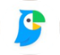

시작하기
아래에서 첫 번째 노트북을 만들어 보세요
✕
다음에서 AI 오디오 오버뷰를 만드세요
내 문서
웹에서 소스를 찾으세요.➤
또는 파일 업로드하기
가져온 후 Drive 파일이 자동으로 동기화됩니다.
최대 10장의 사진을 선택합니다.
사진에 비공개 접근
사용자의 사진 보관함이 여기에 나타나지만 ‘Notebook’ 앱은 오직 사용자가 선택한 항목에만 접근할 수 있습니다.
더 알아보기...
사용자의 사진 보관함이 여기에 나타나지만 ‘Notebook’ 앱은 오직 사용자가 선택한 항목에만 접근할 수 있습니다.
더 알아보기...
뉴스 기사 이미지만 선택해볼까요?
소스⋮
image_picker_081FCDA7-5836-4794-A…
image_picker_4C09E2B1-77AD-4E3C-9…
image_picker_B7F0A3D2-1E5C-4B28-8…
＋ 소스 추가
소스
채팅
 스튜디오
스튜디오
✕
다음에서 AI 오디오 오버뷰를 만드세요
내 문서
웹에서 소스를 찾으세요.➤
또는 파일 업로드하기
가져온 후 Drive 파일이 자동으로 동기화됩니다.
모두 닫기

‹날씨✕🎤⋮
동해안·제주 5~30㎜ 비
충청·남부 소나기
충청·남부 소나기
📺[날씨] 동해안·제주 5~30㎜ 비..충청·남부 소나기 / SBS 모닝와이드 1부
SBS 뉴스 · 조회수 1.1만회 · 6시간 전
SBS 뉴스 · 조회수 1.1만회 · 6시간 전
클립보드에 복사됨
🌡️
내가 모은 데이터로 AI에게 질문하기
소스 2개
Gemini Notebook은 부정확할 수 있으므로 다시 한번 확인하세요.
소스 2개 요청…2
소스
채팅
스튜디오AI 오디오 오버뷰
오늘 지역별 강수량과
소나기 예보를 자세히 알려줘현재 기온 현황과 남부지방의
폭염 특보 상황이 궁금해
소나기 예보를 자세히 알려줘현재 기온 현황과 남부지방의
폭염 특보 상황이 궁금해
Gemini Notebook은 부정확할 수 있으므로 다시 한번 확인하세요.
소스 2개 요청…2소스
채팅
스튜디오AI 오디오 오버뷰
오늘 지역별 강수량과
소나기 예보를 자세히 알려줘현재 기온 현황과 남부지방의
폭염 특보 상황이 궁금해
소나기 예보를 자세히 알려줘현재 기온 현황과 남부지방의
폭염 특보 상황이 궁금해
Gemini Notebook은 부정확할 수 있으므로 다시 한번 확인하세요.
2 ▾➤
1ㅣ
2·
3ㅡ
4ㄱㅋ
5ㄴㄹ
6ㄷㅌ
7ㅂㅍ
8ㅅㅎ
9ㅈㅊ
.,?!
!#1
한
영
영
0ㅇㅁ
한자